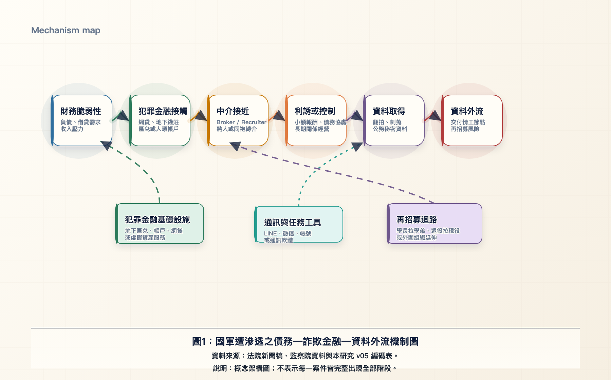
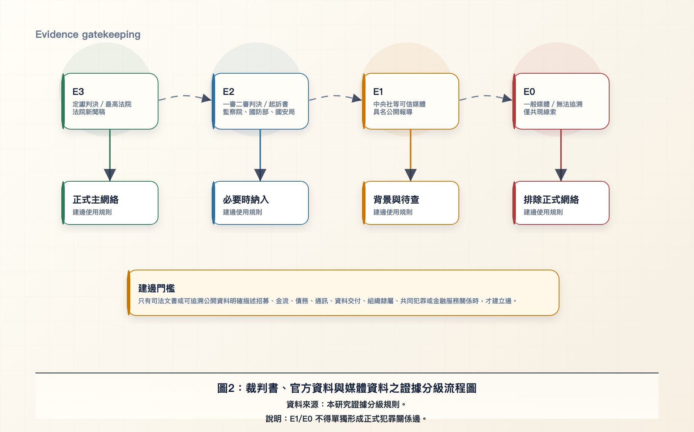
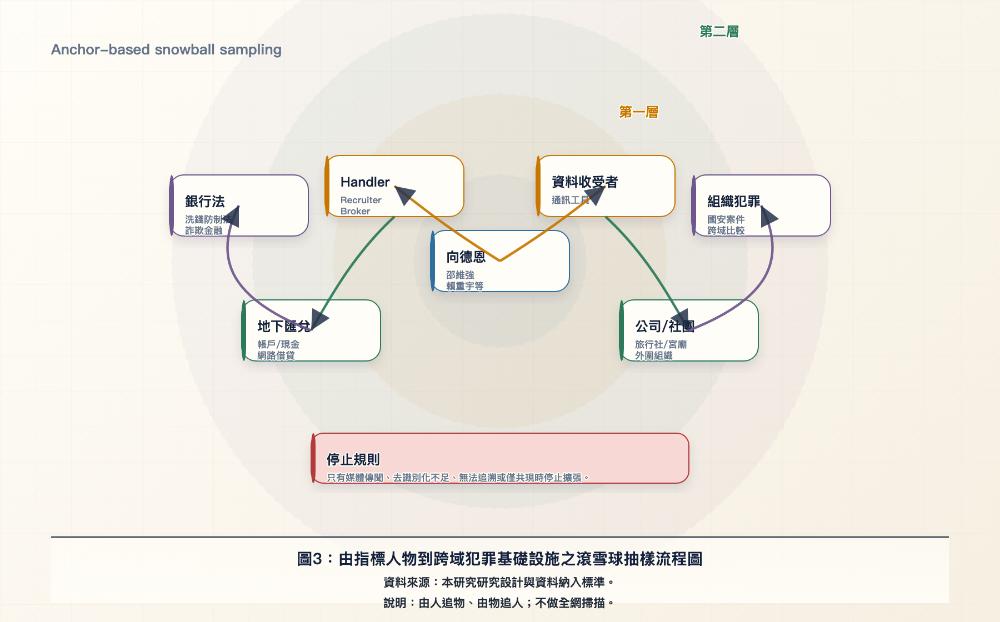
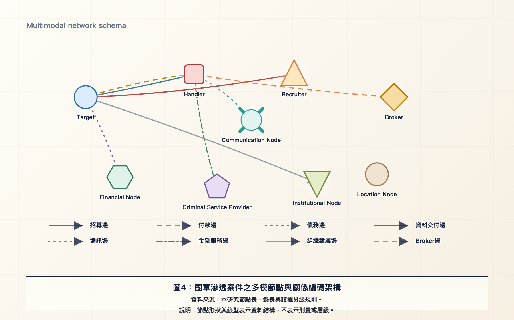
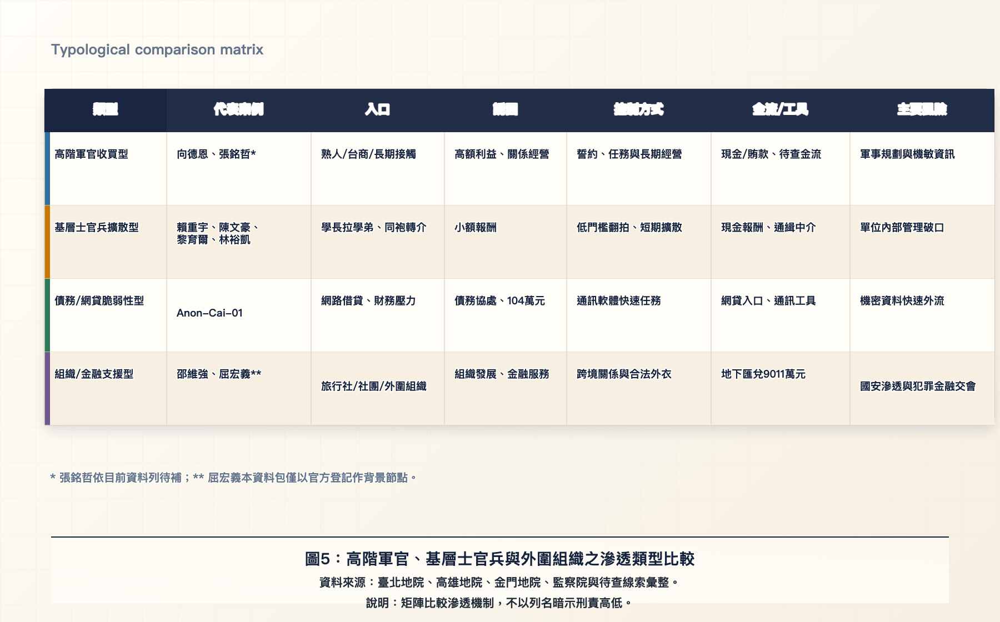
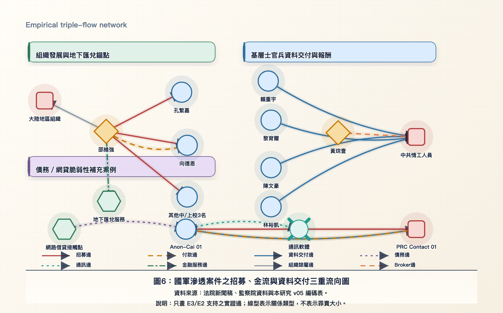
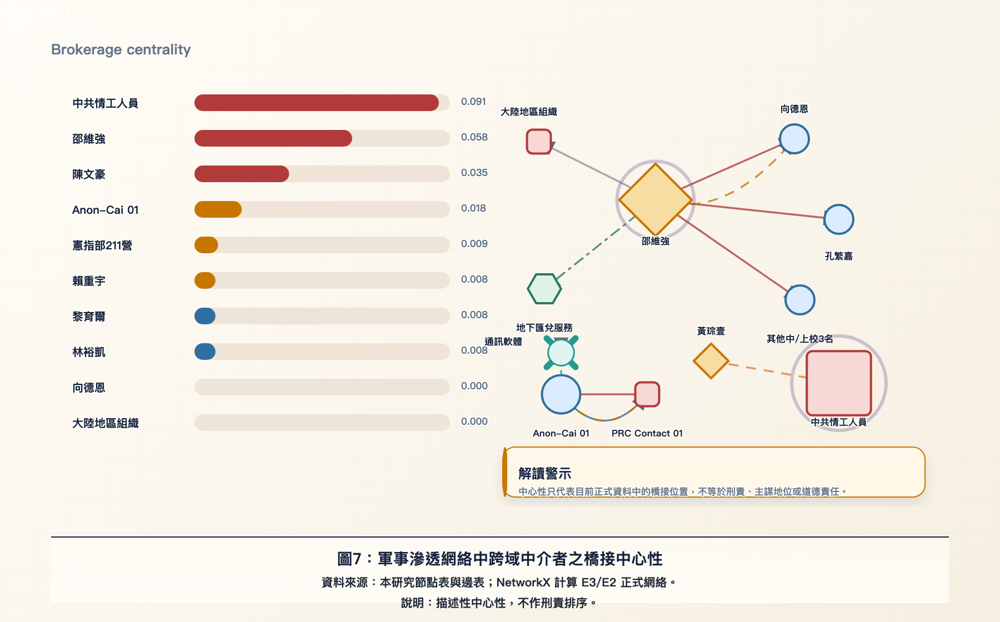
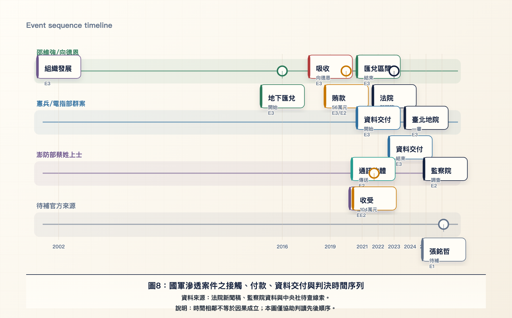

國軍遭滲透之債務—詐欺金融—資料外流機制圖

本圖將本文的理論主軸整理為一條由財務脆弱性進入犯罪金融場域、再經中介者接近與吸收，最後通向資料外流與再招募風險的機制鏈。圖面採取由左至右的流程語法，是為了避免把國軍滲透案件簡化為單一人物道德失範，而是凸顯敵對勢力可能借用網路借貸、地下匯兌、人頭帳戶與通訊工具等犯罪服務供應鏈。讀者應把此圖視為理論架構與研究命題的整合圖，而非每一個個案都必然完整出現所有階段的因果證明。
裁判書、官方資料與媒體資料之證據分級流程圖

本圖說明本文如何把來源可信度轉化為網絡建構規則。E3 與必要的 E2 資料構成正式網絡，E1 只能作為背景線索或待查提示，E0 則不得進入正式主網絡。這樣畫的目的，是把方法上的保守性直接放進圖面，使讀者理解本研究不是以媒體共現或姓名搜尋建立犯罪關係，而是以司法文書與可追溯官方資料作為建邊門檻。
由指標人物到跨域犯罪基礎設施之滾雪球抽樣流程圖

本圖呈現本文的判決書驅動自我中心網絡擴張程序。研究從指標人物出發，先辨識其一階人物與任務關係，再追蹤金流、通訊、組織與場域等二階節點，最後才檢查這些節點是否出現在銀行法、洗錢、詐欺金融或組織犯罪案件中。採用同心層次而非一般搜尋流程，是為了凸顯本文的抽樣邊界：研究目的不是掃描全部共諜案件，而是檢驗特定滲透案件是否向犯罪金融基礎設施擴張。
國軍滲透案件之多模節點與關係編碼架構

本圖是本文多模網絡資料結構的編碼藍圖。不同形狀代表不同節點類型，不同線型代表招募、付款、債務、通訊、資料交付、金融服務與組織隸屬等不同關係層。這種畫法的重點，是避免把同案共犯、同組織或同新聞稿中的共現誤認為上下線關係；只有來源明確描述互動內容時，才形成對應的關係邊。
高階軍官、基層士官兵與外圍組織之滲透類型比較

本圖以類型比較的方式，將高階軍官收買、基層士官兵擴散、債務或網貸脆弱性，以及組織與金融支援四種模式放在同一個分析平面上。矩陣不是為了羅列案例，而是用來比較滲透入口、誘因、控制方式、金流工具與主要風險之間的差異，使本文能從個案敘事推進到可比較的機制分析。
國軍滲透案件之招募、金流與資料交付三重流向圖

本圖是本文的核心實證圖，將招募流、金流、資料交付流、通訊流與金融服務流分層畫在同一張網絡中。圖中的方向箭頭表示來源明示的關係方向，線型表示關係類型，並不表示罪責大小或主從地位。透過分層流向，讀者可以看出邵維強案提供組織發展與地下匯兌的交會錨點，憲兵與電指部群案呈現基層資料交付與報酬鏈，澎防部蔡姓士官案則補充債務或網貸脆弱性如何成為吸收入口。
軍事滲透網絡中跨域中介者之橋接中心性

本圖以橋接中心性呈現目前 E3/E2 正式網絡中的中介位置。左側排序顯示哪些節點在不同子網絡之間扮演較多橋接功能，右側網絡則把這些橋接位置放回實際關係結構中解讀。此圖的學術意義不在於判斷誰是主謀，而在於檢驗本文的中介者假設：軍人節點、敵對情工節點與犯罪金融節點之間，是否需要 broker 或金融服務節點作為連接器。
國軍滲透案件之接觸、付款、資料交付與判決時間序列

本圖將接觸、付款、資料交付與司法揭露放入事件序列，目的在於檢查不同案件中的先後關係與時間聚集。與文獻計量式時間線不同，本圖不展示文獻共被引或研究主題演化，而是用來輔助判斷債務、金融服務、資料交付與司法偵辦之間的時間秩序。讀者應注意，時間相鄰不等於因果成立，仍需回到原始司法與官方資料確認每一條關係。